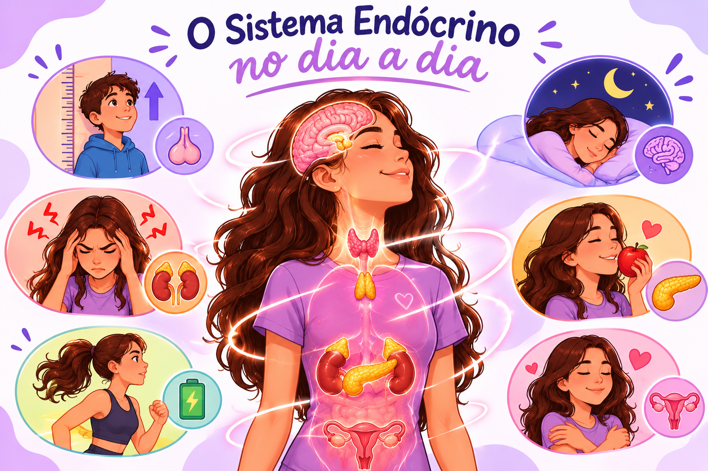

Sistema endócrino no dia a dia

Dia a dia
O sistema endócrino está presente em diversos momentos da nossa vida, mesmo quando não percebemos. Por meio dos hormônios, ele controla e regula funções importantes do organismo, como o crescimento, o sono, a fome, o metabolismo, as emoções e as mudanças da puberdade. Essas substâncias trabalham constantemente para manter o equilíbrio do corpo e garantir seu bom funcionamento.
Crescimento
O crescimento do corpo é regulado principalmente pelo hormônio do crescimento (GH), produzido pela hipófise. Ele estimula o desenvolvimento dos ossos e músculos, contribuindo para o aumento da altura e o desenvolvimento corporal, especialmente durante a infância e a adolescência.
Puberdade
Durante a puberdade, ocorrem diversas mudanças físicas e emocionais causadas principalmente pelos hormônios sexuais, como o estrogênio e a testosterona. Eles são responsáveis pelo desenvolvimento das características sexuais, pela maturação do sistema reprodutor e por outras transformações no corpo.
Outros
Sono e melatonina
A glândula pineal produz melatonina, que ajuda a regular o ciclo sono-vigília. Sua secreção costuma aumentar à noite, especialmente na ausência de luz.
Estresse e adrenalina
Em situações de perigo ou tensão, adrenalina e cortisol contribuem para o estado de alerta e para a disponibilidade de energia.
Fome, saciedade e metabolismo
A grelina está associada ao aumento da fome, enquanto a leptina participa da sinalização das reservas energéticas ao cérebro. Outros hormônios, como insulina e hormônios tireoidianos, também influenciam o metabolismo.
Emoções e alterações hormonais
Oscilações hormonais podem influenciar humor e disposição, como na puberdade e em fases do ciclo menstrual. Emoções, porém, também dependem de fatores psicológicos, ambientais e sociais.
Sistema nervoso e endócrino
O sistema nervoso geralmente transmite sinais rápidos por impulsos elétricos e neurotransmissores; o sistema endócrino utiliza hormônios, cujos efeitos podem ser mais prolongados.